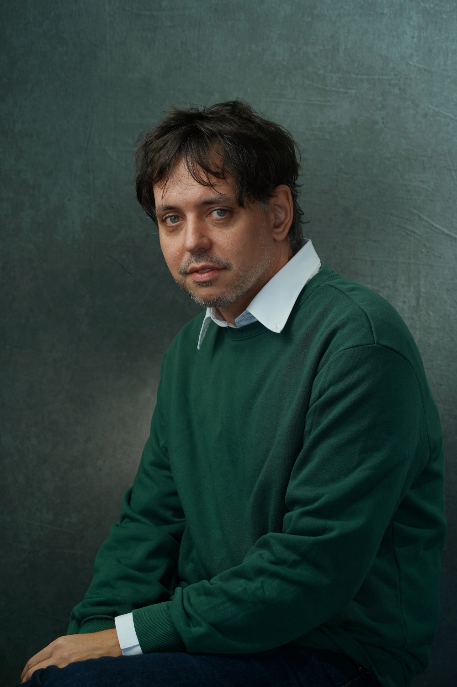

|  |
Alexey GarberAssociate Professor Ph.D. (2009, Steklov Mathematical Institute, Russian Academy of Sciences) Contact information:LHSB 2.518School of Mathematical & Statistical Sciences 1 West University blvd. The University of Texas Rio Grande Valley Brownsville, TX, 78520 tel: +1 956 882 6672
e-mail: alexey.garber@utrgv.edu
|
I am working on different problems of discrete geometry and combinatorics. My current research interests are parallelohedra theory (in particular, the Voronoi conjecture on parallelohedra), geometrical properties of quasiperiodic point sets (bounded distance and bilipschitz equivalence to a lattice), and measures equipartitions.
You can find some more structured information below, or in my CV.
Currently (Fall 2024) I am teaching the following courses.
Last updated in 2024.